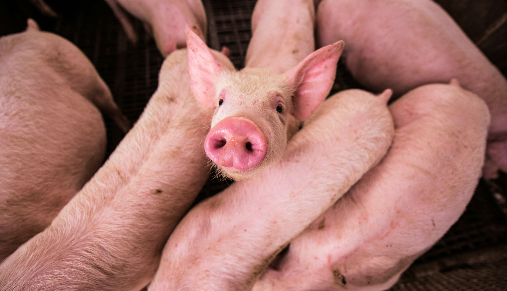
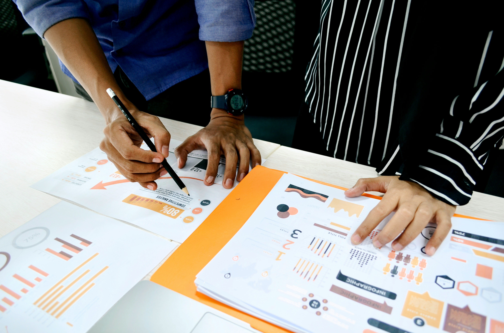

Servicios

Organizar tu ganado

Realizar informes
Anotar consumos

Contabilizar el stock

Contabilizar animales

Somos PAIA Developments®, un equipo de programadores y desarrolladores de aplicaciones multimedia apasionados por crear soluciones tecnológicas que transformen la industria agrícola. Como estudiantes a punto de graduarnos, hemos combinado nuestra experiencia en desarrollo de software con un profundo conocimiento de los desafíos que enfrentan los agricultores modernos.
La alimentación del ganado es un punto clave para el crecimiento, la salud y el bien estar de los animales. Muchas granjas y empresas ganaderas optan por piensos de baja calidad sin importarle los resultados, otras optan por piensos más caros sin realizar un estudio de su efectividad en los animales, lo cual repercute directamente en la rentabilidad de la granja. Por eso decidimos crear una app que permita realizar A/B testing de los diferentes alimentos en diferentes grupos de animales para de esta forma poder elejir el mejor alimento conforme a sus necesidades.
Nuestro objetivo es crear una herramienta que permita rentabilirar los consumos de alimento de los ganados de una o varias granjas, organizar todos los animales en grupos a conveniencia ya sea por especie o edad. Llevar el seguimiento del stock disponible de cada alimento y poder realizar informes para maximizar su rentabilidad.
Nuestro cliente ideal es el ganadero moderno, ya sea un pequeño productor independiente o una gran empresa agropecuaria. Este ganadero busca optimizar la alimentación de su ganado para mejorar la salud, el rendimiento y la rentabilidad de su explotación.
Saber exactamente cuánto alimento consume cada grupo de animales (vacas, cerdos, gallinas, etc.) para ajustar las raciones y evitar el desperdicio.
Monitorear el consumo de alimento día a día para detectar cambios o tendencias que puedan indicar problemas de salud o de producción.
Tener a mano la información de contacto de los proveedores de alimento, así como los detalles de los productos que ofrecen (precios, ingredientes, etc.).
Generar informes y análisis sobre el consumo de alimento para tomar decisiones informadas sobre la alimentación del ganado.